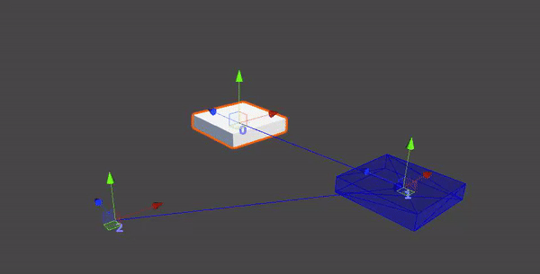
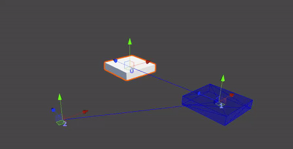

Momentum is a light puzzle platformer, set in a strange place where the technology is run on the forces of time. In order to sustain it, time has been harvested from several timelines. Due to this large harvest, the time continuum has started to fall apart.
It is up to you to to find the time vault and release time back into the world. You will face challenges as you traverse this strange world in your search for all of the locks which are keeping the vault closed. They will test your ability in timing and planning.
To your aid, you have a tool which can directly control the time energy the technology is run on. But the tool’s power is not unlimited, it can only control one object at a time, and due to its restrictions, you need to carefully time and plan in order to progress.
Act quickly, but not without consideration, as any misstep might bring you to your doom, and when you fail, so will everything that ever existed. As history crumbles, so will the future it supports.
What is this?
This game was a school project that I worked together with 11 other people on over the course of 8 weeks. I mainly worked with creating tools with and for our level designer.
The game idea wasn't fully fledged out until a couple of weeks into the project, this required the programmers in the group to work on features in a way where a change of mechanics or simmlar wouldn't invalidate our work. This lead to us creating all the features, mechanics and tools in a highly modular and event-based way. This way, our designers could play around with the features and use them in multiple ways to help them decide on the final goal of the game.
An example of a feature built this way was the Character Controller. We didn't have a 3D artist comfortable with animation in our team, this led us to make the game an FPS, this way our 3D artists could focus more on the aesthetic of the game rather than having to worry about animations.
The Character Controller was built entirely modularly. This meant that the designers could attach any function to any controller event in-engine. We built the character controller this way to allow for much faster iteration for the designers, it was also thanks to this that we could find the right type of gameplay for our game much quicker.
public class InputComponent : MonoBehaviour
{
public InputProfile inputProfile;
public UnityEvent OnJump;
public UnityEvent OnInteract;
[Header("Triggers")]
public UnityEvent OnPrimaryFire;
public UnityEvent OnPrimaryFireDown;
public UnityEvent OnPrimaryFireUp;
public UnityEvent OnSecondaryFire;
public UnityEvent OnSecondaryFireUpDown;
public UnityEvent OnSecondaryFireUp;
[Header("Axis")]
public UnityEventVector2 OnLookAxis;
public UnityEventVector2 OnMoveAxis;
[Header("Other")]
public UnityEvent OnPauseButton;
void Update()
{
if (inputProfile.GetJumpButton()) OnJump.Invoke();
if (inputProfile.GetPrimaryFireButton()) OnPrimaryFire.Invoke();
if (inputProfile.GetSecondaryFireButton()) OnSecondaryFire.Invoke();
if (inputProfile.GetPauseButton()) OnPauseButton.Invoke();
}
}
public class InputProfile : ScriptableObject
{
public virtual Vector2 GetInputVector() => Vector2.zero;
public virtual Vector2 GetLookVector() => Vector2.zero;
public virtual bool GetJumpButton() => false;
public virtual bool GetPrimaryFireButton() => false;
public virtual bool GetSecondaryFireButton() => false;
public virtual bool GetInteractButton() => false;
public virtual bool GetJumpButtonDown() => false;
public virtual bool GetPrimaryFireButtonDown() => false;
public virtual bool GetSecondaryFireButtonDown() => false;
public virtual bool GetInteractButtonDown() => false;
public virtual bool GetJumpButtonUp() => false;
public virtual bool GetPrimaryFireButtonUp() => false;
public virtual bool GetSecondaryFireButtonUp() => false;
public virtual bool GetInteractButtonUp() => false;
public virtual bool GetPauseButton() => false;
}
 
